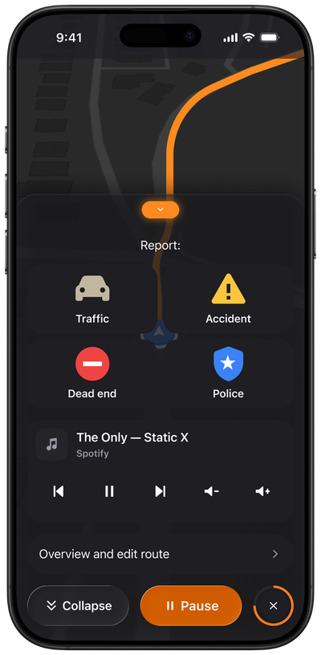
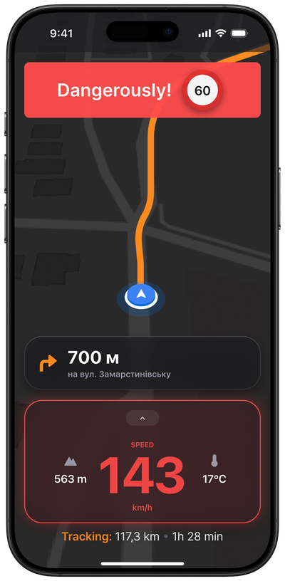
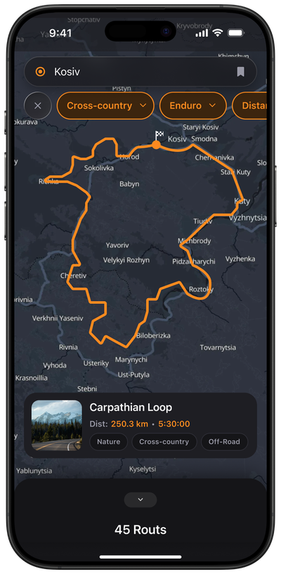
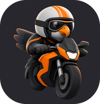
Ridi
A navigation app concept for motorcyclists
A motorcyclist doesn't have time to look at the screen. I designed a navigator that reads with peripheral vision at speed, without demanding attention.
- Role: UX Designer, Product Owner
- Pet Project
- Tools: Claude, Figma MCP, FigJam
- Case status: MVP, ready for vibe coding
Overview
Ridi is a navigation app concept for motorcyclists (iOS), covering three rider types: sport bikes, enduro, city bikes. The product went through the full path from field UX research to a design system and assembled UI, following the Double Diamond process.
The core premise behind every decision: a motorcyclist doesn't have time to look at the screen. They're moving, wearing gloves, riding at speed, often without stable coverage. Hence the large buttons, dominant speedometer, speed-based auto-zoom, and route selection by type and mood.
My Scope
Role:
I run this project solo as a pet project: research, information architecture, UX scenarios, design system, and UI. There was no client or team — this is a concept project, and I state that plainly rather than presenting it as commercial work.
Constraints:
The research was field-based and survey-based: 10 interviews and 50 survey responses. This isn't large-scale UX testing, so the project stays at the concept stage, and the decisions shouldn't be read as validated on a live product.
Respondent geography: Ukraine and partly Europe. So the positioning targets the European motorcycle-touring market, not other regions.
The Challenge
Existing navigators are either not built for motorcyclists (Google Maps and Waze are popular but ignore the context of riding a motorcycle) or impractical at speed (Rever requires a subscription for full functionality, Strava has no moto-specific features, Waze is too car-oriented).
The research confirmed this is a systemic problem, not isolated complaints: overloaded interfaces, no route customization for riding style, no real-time reaction to obstacles.
Research
Methods
- Firsthand experience on the road: several navigation apps tested live, while riding
- 10 interviews with motorcyclists across disciplines (sport / enduro / city)
- 50 responses to an online survey
- Competitive analysis
Survey results
- 60% complain about apps being too complex or overloaded
- 45% lack route customization
- 70% want real-time reaction to obstacles
- 55% want to share routes within a community
Analogs tested along the way:
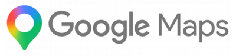
Audience segmentation
Newcomers 10%
(simple onboarding and recommendations)
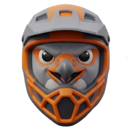
Enthusiasts 70%
(simple planning tools)
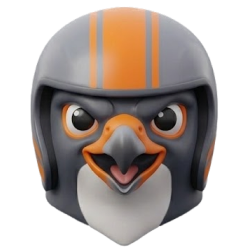
Experienced 20%
(analytics, stats, communities)
So I used the research to build the corresponding artifacts
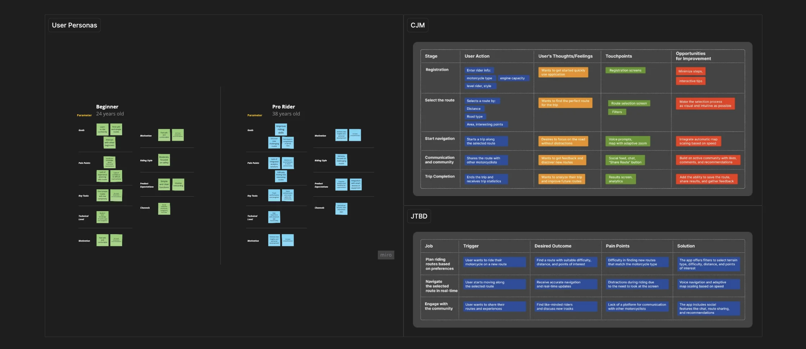
Which I later reshaped into an information architecture for clear logic
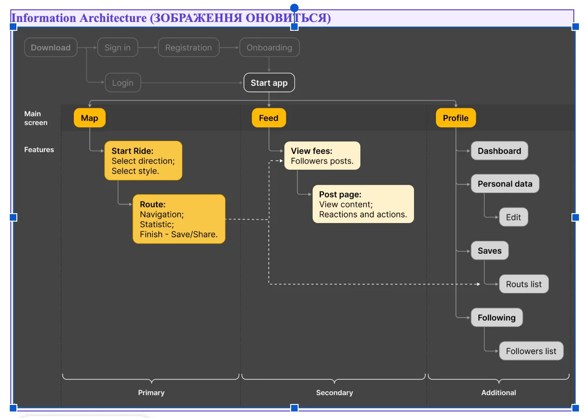
Key Decisions
Every decision below is tied to the context of riding — that's what separates product thinking from «pretty screens».
The «Danger» state in the Ride Cluster
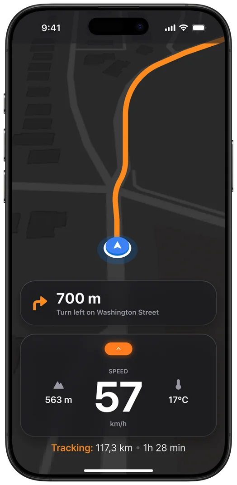
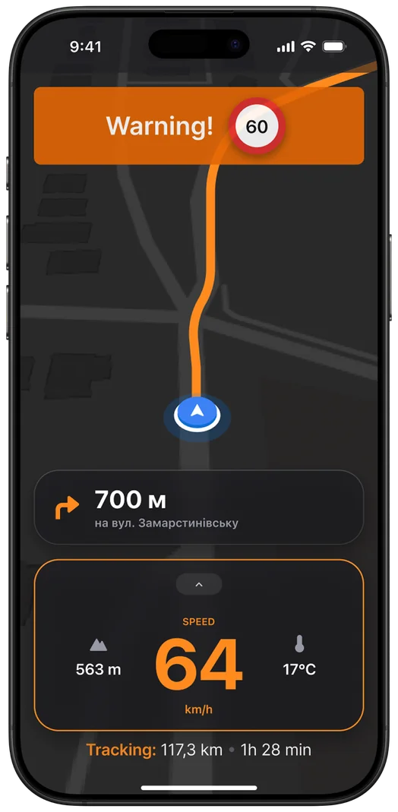
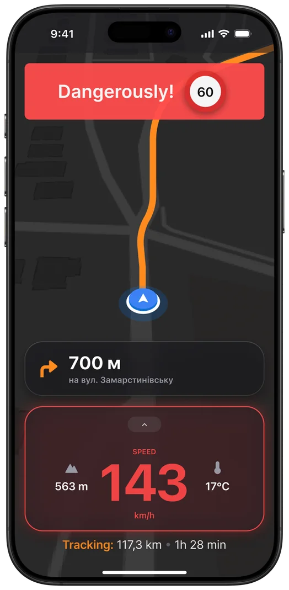
Problem
Reading a number on the speedometer at speed is a distraction that costs a lot. A standard UI shows speeding in the same color as normal.
Solution
Big numbers and alerts. When speeding, the number turns red with a red glow around the capsule. Three states: Normal → Warning → Danger.
Why
Color and glow read faster than a number in peripheral vision. The danger state needs to «shout» before the rider even manages to read the number.
Speed-based map auto-zoom
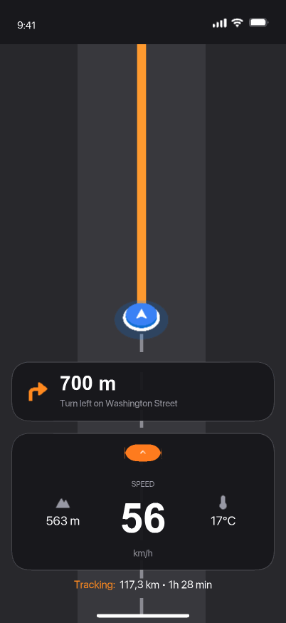
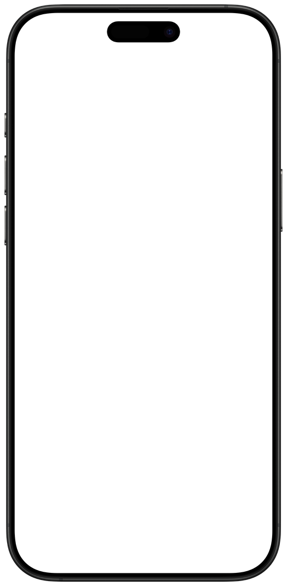
Problem
A standard map holds one zoom level regardless of speed — accelerating, the rider gets too little context about the road ahead.
Solution
The map automatically zooms out when accelerating, giving more room to react, and zooms in at low speed for detail.
Why
This is an original feature that's missing even from the direct reference point Scenic — it follows directly from the «no time to look at the screen» insight.
Protecting track recording from accidental ending
Problem
One accidental tap while riding can end and lose a 200km track recording — the most costly mistake in the flow.
Solution
Pause is moved into a sheet, separate from Finish; ending only happens via hold-to-finish, not a single tap.
Why
The pattern is deliberately borrowed from Strava: protecting valuable data matters more than speed of action when the cost of a mistake is losing the entire ride.
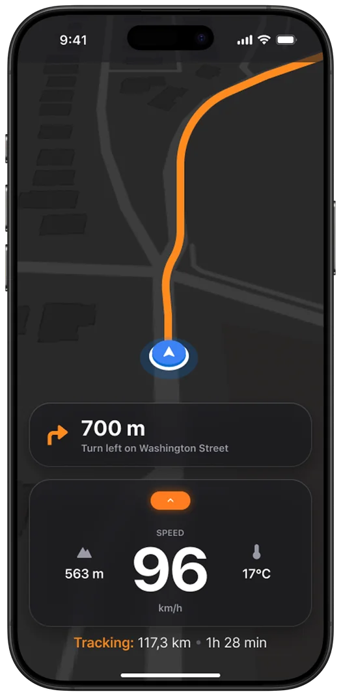
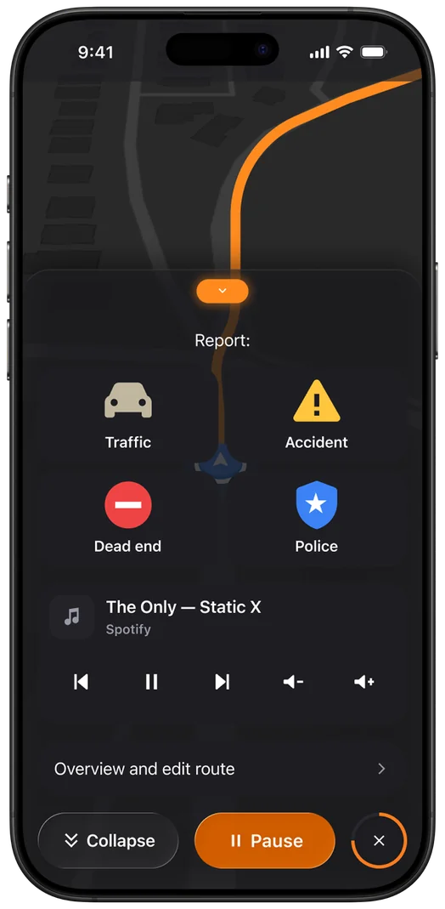
Core Features
Onboarding
Captures the rider's profile once: level, riding style, engine size, distance. The data fills a preset that feeds Scenario 2's filters, so fewer steps are needed on every next route build.
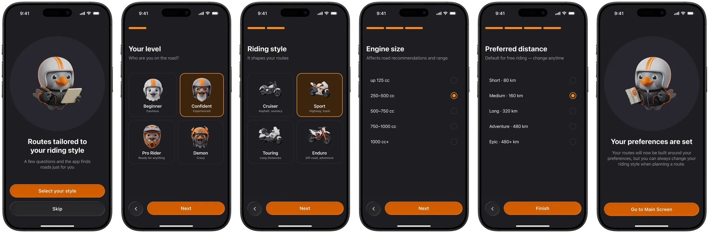
Scenario 1 — Direct Route Planning
The rider wants to reach a specific point by the most direct route, with the option to add stops along the way.
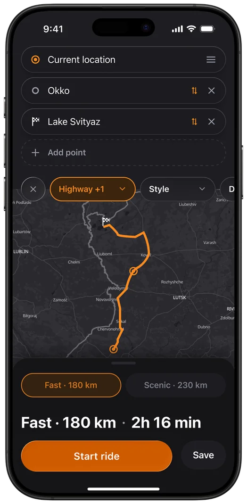
Scenario 2 — Custom Route Based on Preferences
The rider wants to ride around their current location; the app suggests routes matched to style and level (Rider Level, Style, Terrain, Distance, Area).
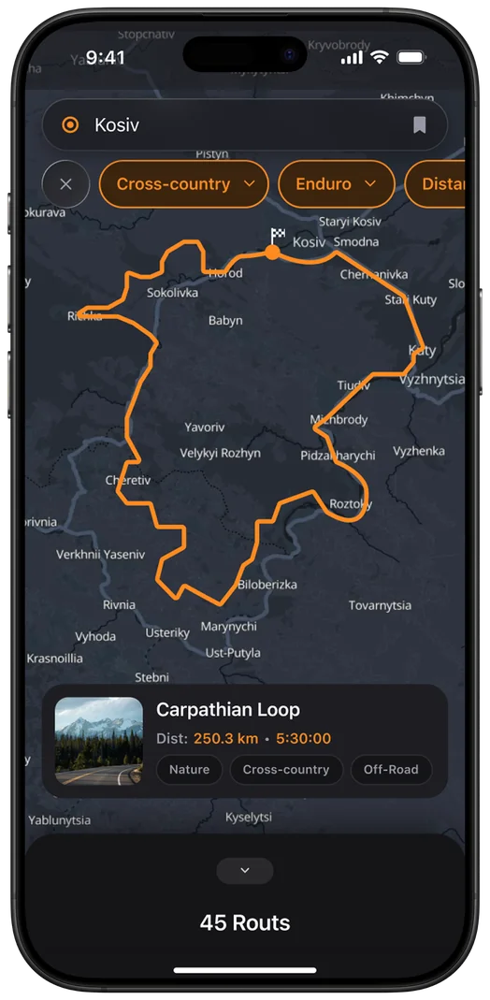
Scenario 3 — Free Riding
Start with no destination or route → the app automatically records the track → save and name it at the end.
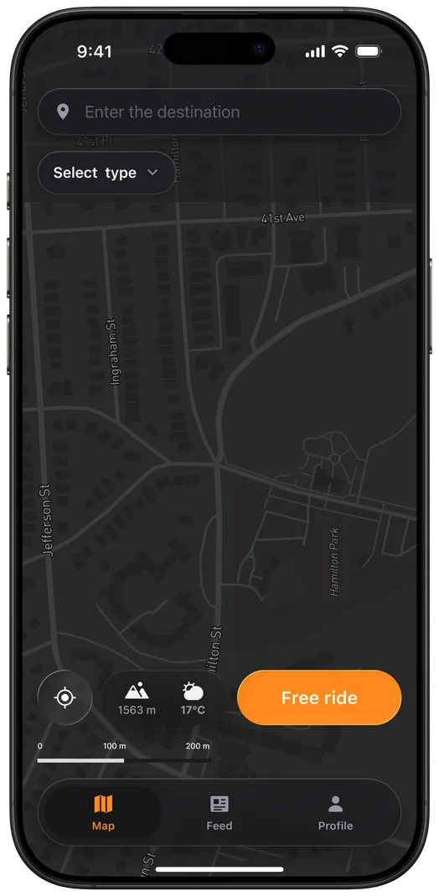
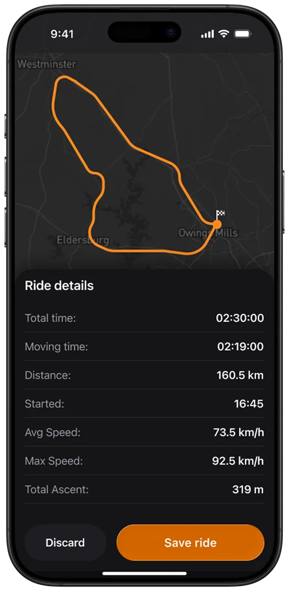
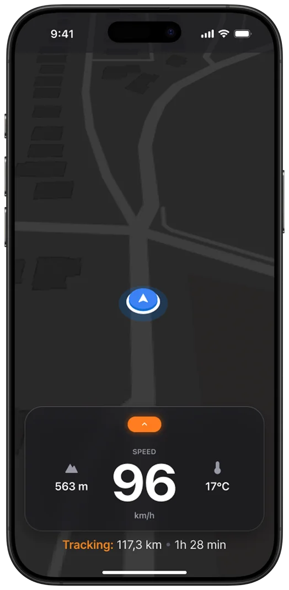
Want to see all the UX scenarios?
View allUIKit
A component library (29 components across 4 token collections) and base controls from the official Apple iOS 26 Liquid Glass — generated via Claude and Figma MCP, I checked the result and adjusted it to fit product needs. This is the tooling part, not the core work.
The core work in this case is the decisions tied to the context of riding (the «Key Decisions» section above): what states are needed at speed, how the map behaves, how track recording is protected. The components are just the material it's built from.
The primary contrast was raised deliberately: the old #FF6B00 scored 6.8:1 and failed AAA, the new #FF8A1F scores 8.2:1, passing AAA. Touch targets are 56–64px instead of the standard 44px HIG — a deliberate deviation from the guideline, justified by riding in gloves.
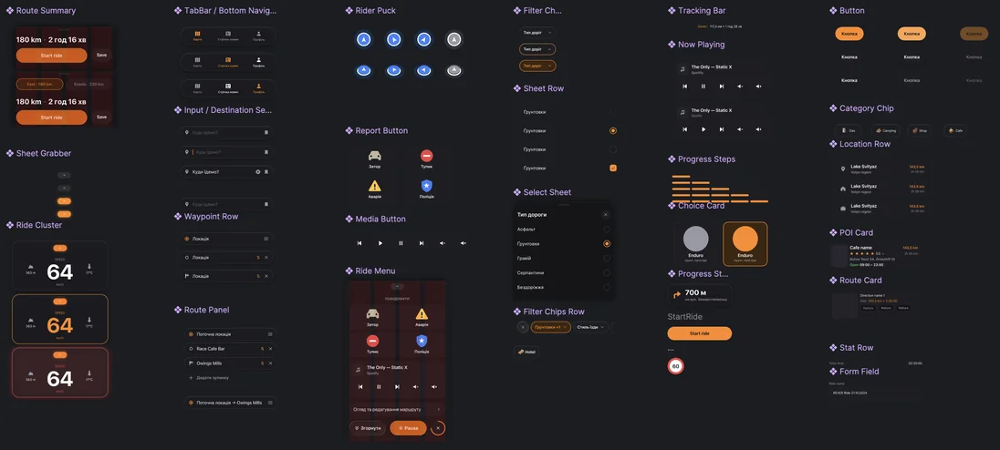
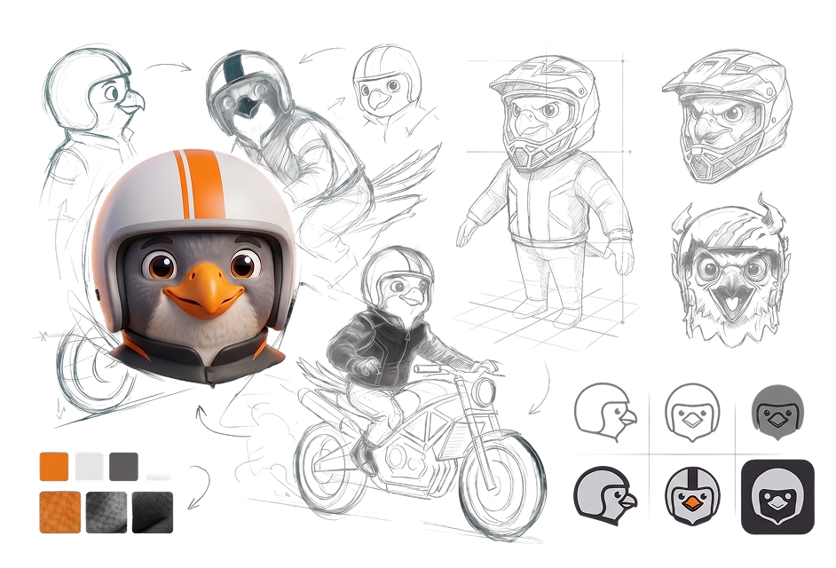
Mascot
A falcon — an association with navigation (a bird's-eye view, a precise trajectory) and speed. Two registers: a flat, minimal silhouette for functional marks (a map pin, the app icon) and a full 3D character for the case study cover.
Results
Objective characteristics:
- 29 components across 4 token collections (Primitives / Color / Spacing / Radius)
- Primary contrast raised from 6.8:1 to 8.2:1 — from failing AAA to passing it
- 4 route scenarios + onboarding built in hi-fi UI
What I'm betting on after launch:
- Average route creation time ≤2 minutes
- 3+ saved routes per user per month
- ≥50,000 app downloads in 6 months, MAU ≥40%, subscriptions ≥10% of actives
Reviews:
Ready to architect your next product?
Open for complex challenges and leadership roles. Select time to call and hire me below.
Book a Call